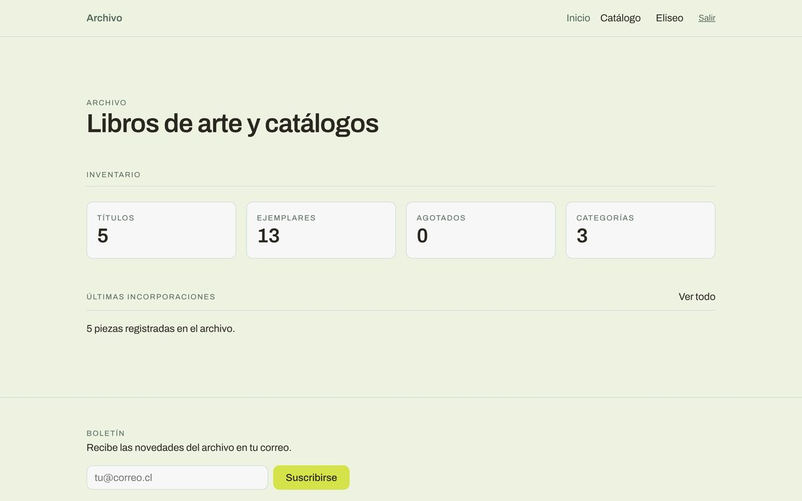
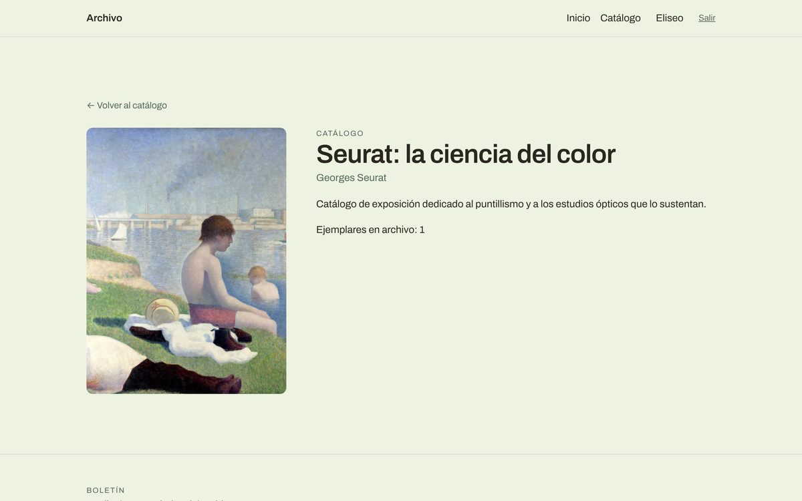
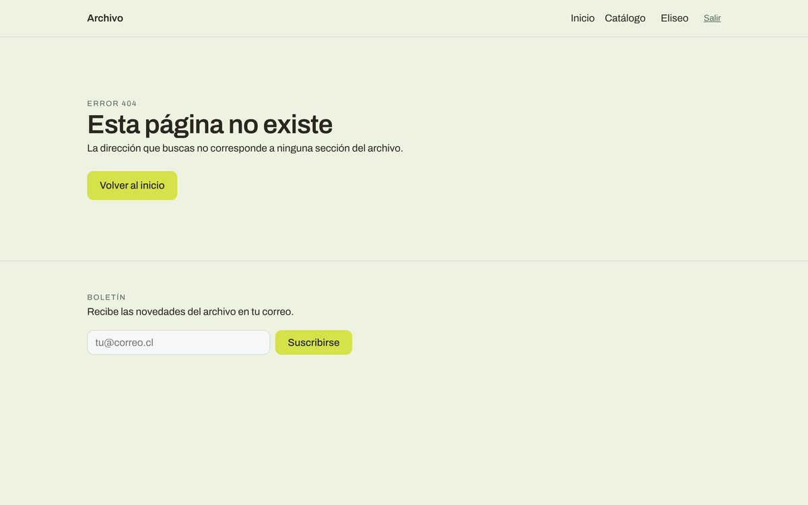

Caso de estudio
Archivo de libros de arte
Cómo una aplicación en Vue.js pasó de vivir en un solo archivo a tener una arquitectura ordenada, con estado centralizado, rutas y conexión a una API.
- Contexto
- Bootcamp Front-End Alkemy, módulos 6 y 7
- Tecnología principal
- Vue 3 con Vuex y Vue Router


Descripción de la actividad
Desarrollé una aplicación web para administrar un archivo de libros de arte y catálogos. Es una herramienta interna pensada para quien gestiona una biblioteca y no para el público. Permite registrar piezas, buscarlas y filtrarlas, revisar la ficha de cada una, marcar favoritos y controlar los ejemplares que entran y salen del archivo.
El proyecto tuvo dos etapas que comenzaron en el Módulo 6 donde construí la base en Vue.js y en el Módulo 7 la amplié con manejo de estado centralizado (Vuex), consumo de una API, una página 404 y una función de suscripción.
Desafío principal
Lo más difícil fue la ampliación del Módulo 7 que hasta entonces era donde todos los datos vivían en un solo
archivo de App.vue (el componente principal). Al agregar Vuex, una API y nuevas rutas
el proyecto pasó de ser un solo bloque a tener muchas piezas separadas como vistas, componentes,
store (el almacén central de datos), el router (el sistema que decide qué página se muestra) y la
conexión con la API.
El desafío no era solo escribir código nuevo, era entender la arquitectura de dónde va cada archivo, qué responsabilidad tiene cada uno y cómo se comunican entre sí. Al principio era confuso saber si algo debía ir en una vista, en un componente o en el store.
Módulo 6
App.vue
Guarda los datos, los modifica y reparte la información a todos los componentes.
Todo pasa por un solo archivo.
Módulo 7
- Vistas y componentes Lo que se ve: páginas completas y piezas reutilizables.
-
App.vuecomo puente Envía acciones al store y lee la información desde los getters. - Store de Vuex 4 módulos: libros, favoritos, sesión y suscriptores.
-
api/index.jscon Axios Un único punto de conexión con el servidor. -
json-server
Backend simulado que sirve los datos de
db.json.
Solución propuesta
Reorganicé el proyecto separando responsabilidades de modo que cada parte hiciera una sola cosa:
views/(páginas completas): Inicio, Lista, Detalle y la página 404.components/(piezas reutilizables): ficha del libro, formulario, panel de inventario, header y footer.store/(Vuex): dividido en 4 módulos independientes, uno por tema: libros, favoritos, sesión y suscriptores.router/: rutas, incluida una ruta dinámica para la ficha de cada libro y una ruta comodín que muestra la página 404 cuando la dirección no existe.api/: un único punto de conexión con el servidor configurado una sola vez.
Con esto App.vue dejó de modificar datos y pasó a ser solo un puente que envía
acciones al store y lee la información desde ahí.
Además tomé la decisión de que el nombre de usuario y los favoritos quedaran alojados en el navegador (localStorage) y no en la API porque son datos personales de quien usa la app y no del archivo compartido.


Herramientas técnicas utilizadas
- Vue.js 3 con Composition API (forma moderna de escribir componentes en Vue)
- Vuex para el manejo de estado
- Vue Router para la navegación entre páginas
- Axios (librería para hacer peticiones a una API)
- json-server (un backend simulado que sirve datos como si fuera un servidor real)
- CSS con variables y estilos encapsulados por componente
- Git y GitHub para el control de versiones (registro de los cambios del código)
Principales aprendizajes
- Entendí que una aplicación evoluciona bastante cuando cada parte tiene una sola responsabilidad.
- Aprendí la diferencia entre acciones asíncronas (las que esperan respuesta del servidor) y mutations (las que cambian los datos al instante) y por qué conviene separarlas.
- Aprendí a manejar los estados de carga y de error para que el usuario sepa qué está pasando mientras la app espera los datos.
- Aprendí a documentar mis decisiones técnicas y los límites conocidos del proyecto en el README.
Métricas de impacto
- Estado centralizado en el que el 100% de los datos compartidos salió de
App.vuey pasó a Vuex organizado en 4 módulos. - La dirección de la API se define en 1 solo lugar en vez de repetirse en cada petición.
- El proyecto quedó con 4 vistas, 7 componentes y 14 funcionalidades.
- Cada acción que se comunica con la API maneja carga, error y éxito.
Habilidades técnicas aplicadas
- Arquitectura de aplicaciones front-end
- Manejo de estado
- Consumo de APIs
- Programación asíncrona (async/await)
- Enrutamiento
- Componentes reutilizables con props, eventos y slots
- Directivas personalizadas
- Validación de formularios
- CSS organizado por niveles
- Documentación técnica
Por qué elegí este proyecto
Es el proyecto que mejor muestra mi evolución ya que pasé de construir una aplicación en un solo archivo a diseñar una estructura ordenada y escalable (que puede crecer sin desordenarse). Además une mis dos mundos que son el arte y el desarrollo front-end. Es un catálogo de arte parecido al tipo de producto que hace Artsy que es la empresa que investigué.